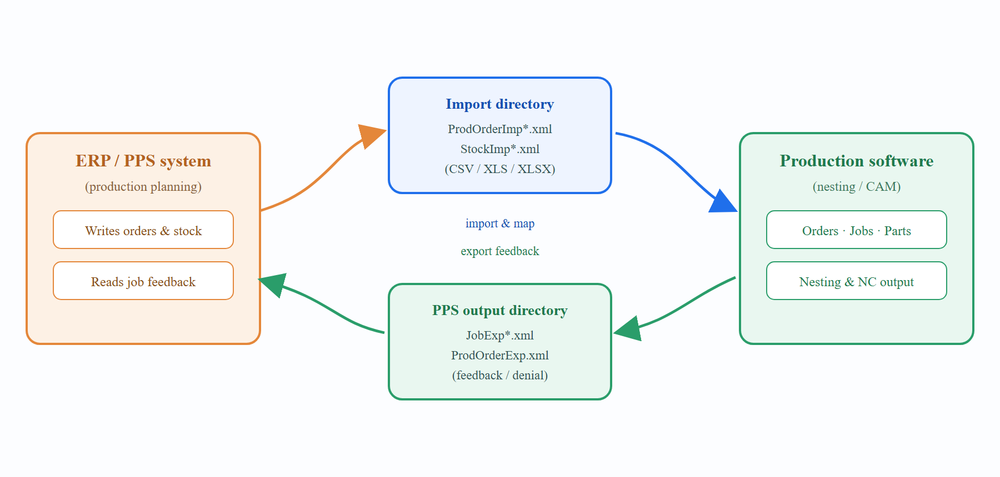

Architecture & Data Flow
The interface is file-based and asynchronous. The ERP/PPS system drops import files into a watched input directory; the production software writes feedback files into a configured output directory. Neither side calls the other directly.

Legend: ERP writes / reads · Software imports · Software exports.
2.1 Directories
-
Import directory — the folder the ERP/PPS system writes order and stock files into. The production software imports these files (via drag-and-drop, the open/import command, or a folder watcher).
-
PPS output directory — a single, user-configured folder the production software writes all feedback files into, so the ERP/PPS system has one location to scan. This central location is used regardless of which machine produced the job and regardless of per-machine output folders.
|
Note
|
Configure the output location under Factory → Settings → Job → Output settings → PPS output directory. An invalid or unreachable path (for example a mapped drive not visible to the running process) raises a clear “path does not exist” warning. |